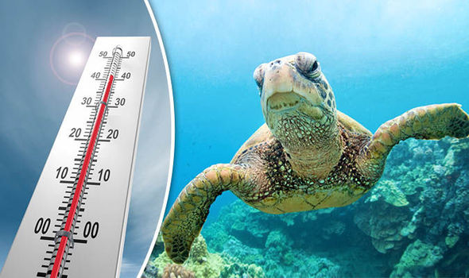

Plastic Pollution
Plastic pollution is one of the biggest threats to turtles. Turtles mistake plastic bags, straws, and other plastic debris for food, which can cause them to choke or suffer from digestive problems. Plastic pollution also affects turtles' habitat, as it can damage coral reefs and seagrass beds. To prevent plastic pollution, we can reduce our use of single-use plastics and properly dispose of plastic waste.
Learn more about plastic pollution and how to prevent itClimate Change
Climate change affects turtles in various ways. Rising temperatures can cause beaches to become too hot for turtle eggs to hatch, and changes in ocean currents can affect turtles' ability to find food. Climate change can also cause sea level rise, which can destroy turtle nesting habitats. To prevent climate change, we can reduce our carbon footprint by using renewable energy sources and conserving energy.
Learn more about climate change and how to stop itIllegal trade

Illegal trade is a major threat to turtles, particularly those with valuable shells, such as hawksbill turtles. The demand for turtle meat, eggs, and shells has led to overexploitation of turtle populations. To prevent illegal trade, we can support conservation efforts and laws that protect turtles, and avoid purchasing products made from turtle shells or other parts.
Learn more about illegal trade and how to prevent it